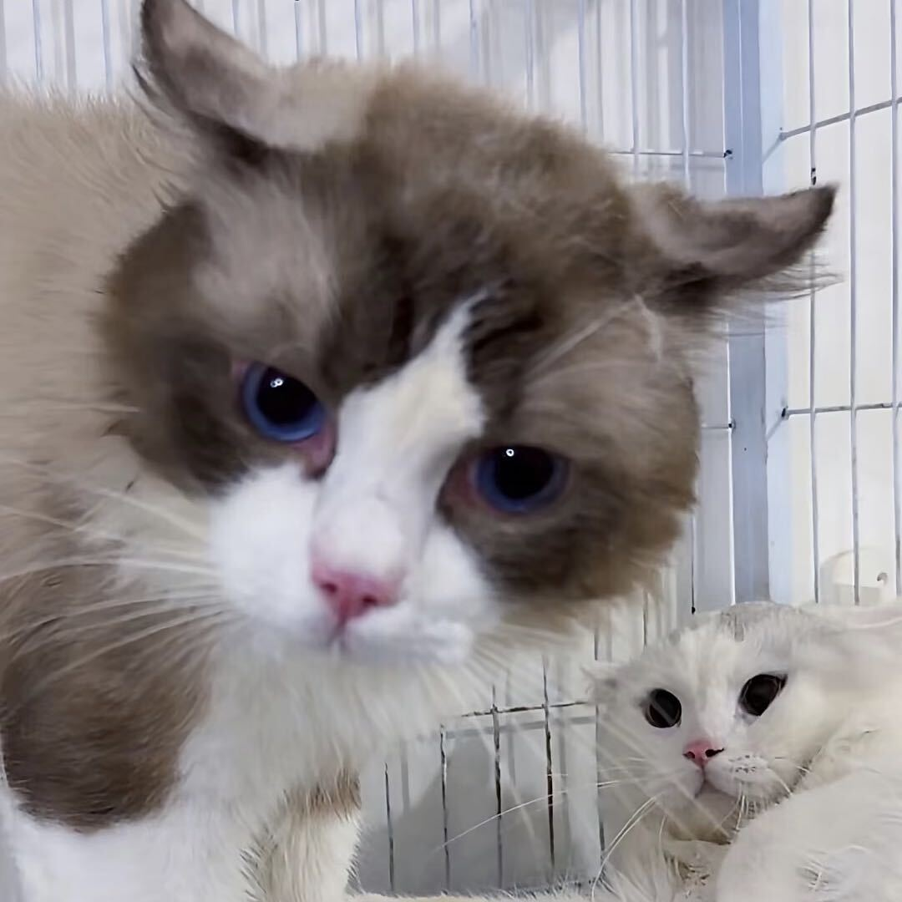
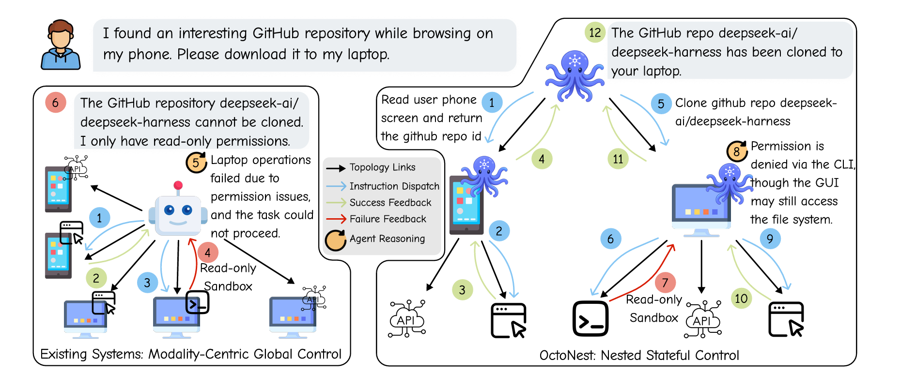
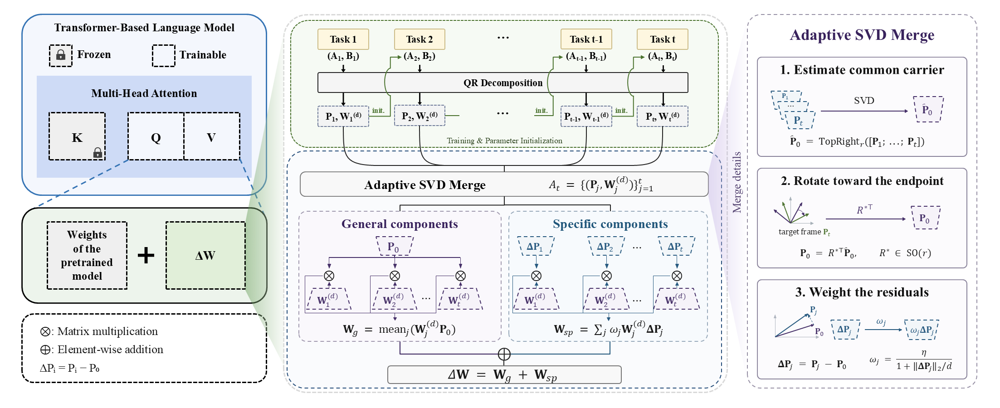
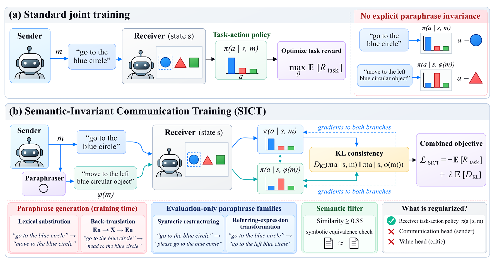
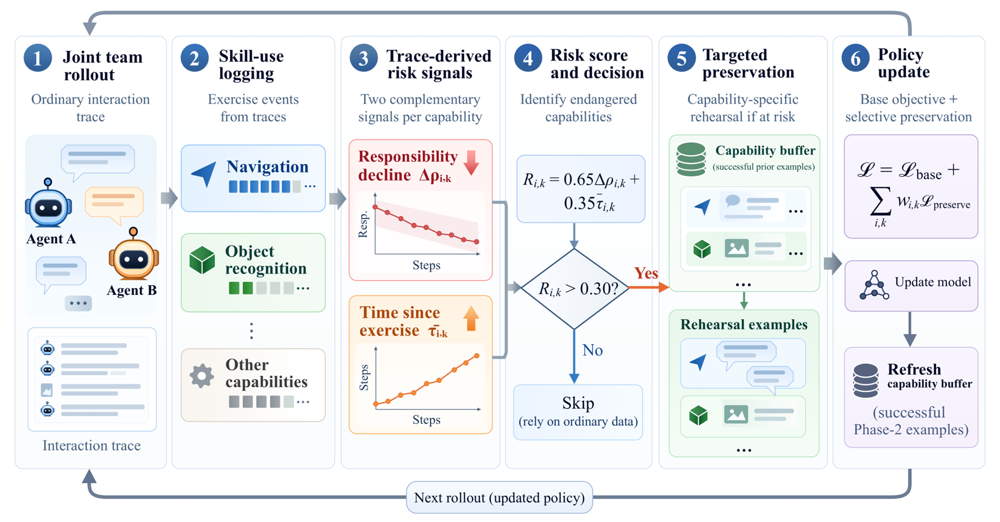

LLM Agents
From long-horizon reasoning to tools, recovery, and execution in the real world.
Welcome to the homepage of
Quaerendo invenietis.
An AI undergraduate at Shanghai Jiao Tong University, currently focusing on LLM agents, multi-agent systems and model collaboration.
I’m interested in the space between what a model knows and what a system can actually do.

Yuhua Luo / silhovetteI am an undergraduate student in Artificial Intelligence at Shanghai Jiao Tong University, working on language-model systems with a primary focus on LLM agents, multi-agent systems, and model collaboration.
My research interests center on building capable and adaptive agent systems that can reason, coordinate, and act in complex environments. Recent work spans autonomous agent systems, hierarchical planning and recovery, cross-device interaction, continual learning, and efficient adaptation of large language models.
From long-horizon reasoning to tools, recovery, and execution in the real world.
How agents, models, and devices coordinate to solve problems together.
Learning new capabilities while retaining knowledge through efficient adaptation.

Adaptive cross-device execution through stateful control. Local agents act; an orchestrator keeps the bigger picture.

Geometry-preserving task vector merging for replay-free continual learning in large language models.

Studies how joint training can improve coordination while increasing sensitivity to meaning-preserving message changes. SICT improves robustness by aligning receiver actions across equivalent messages.

Reveals individual capability loss hidden by teammate compensation. RACP tracks responsibility shifts and disuse to selectively rehearse at-risk skills while retaining team utility.
Preprints, manuscripts, and ongoing questions about intelligent systems.
Stateful cross-device orchestration that combines local modality refinement with execution-feedback-driven plan and device reassignment.
Replay-free continual learning with chain-updated task vectors, adaptive SVD merging, and geometric separation of shared and task-specific knowledge.
Studies how joint training can improve coordination while increasing sensitivity to meaning-preserving message changes. SICT improves robustness by aligning receiver actions across equivalent messages.
Reveals individual capability loss hidden by teammate compensation. RACP tracks responsibility shifts and disuse to selectively rehearse at-risk skills while retaining team utility.
Two additional manuscripts · details to follow
B.S. studies in Artificial Intelligence
Class monitor of the first undergraduate cohort
High School
Shanghai Innovation Institute
Zhiyuan Honor Scholarship, Zhiyuan College, Shanghai Jiao Tong University
Merit Student, Shanghai Jiao Tong University, 2025–2026
Merit Student, Shanghai Jiao Tong University, 2024–2025
Outstanding League Member, Shanghai Jiao Tong University
From a research idea to a working system.
Python · C++ · PyTorch
Transformers · PEFT · PPO
ChromaDB · FAISS · RAG
NumPy · Pandas · scikit-learn
Linux · Git · CUDA
API · CLI · GUI